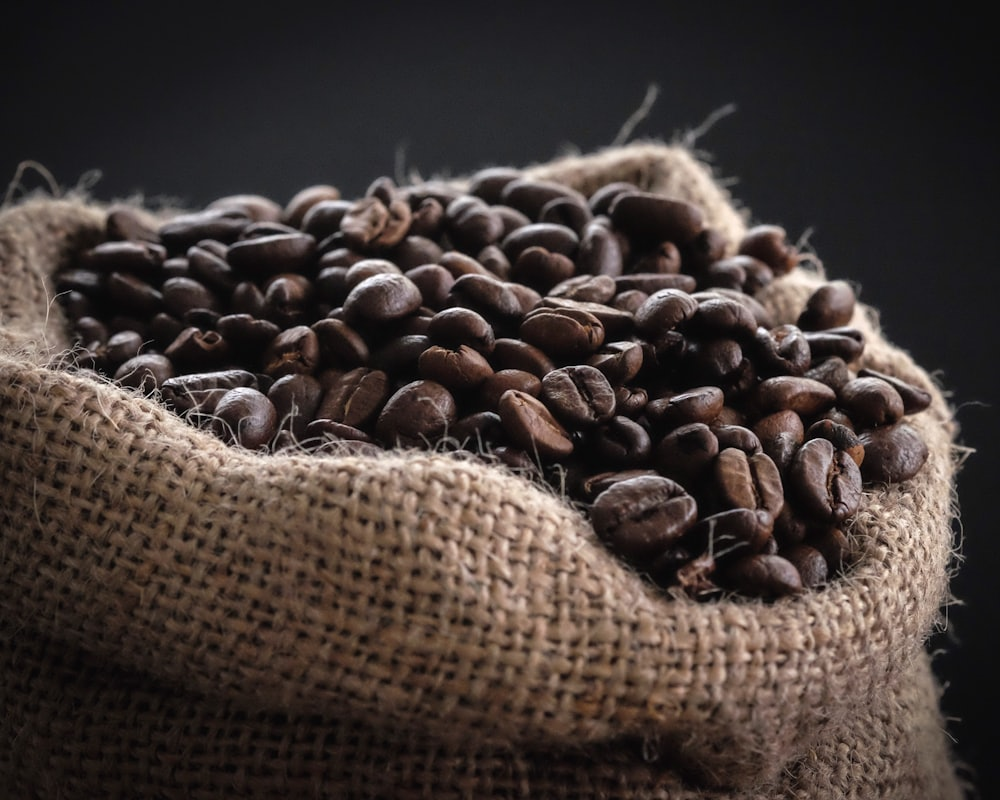

Featured single origin
Colombia · Single origin
Fresh specialty coffee by Meridian Roasters
Antioquia · 1,750 masl · Washed process
Discover traceable coffee selected for sweetness, clarity, and character. Our featured Antioquia lot balances red plum, cocoa nib, and panela in a rounded, comforting cup.
Red plumCocoa nibPanela
- Roasted fresh
- Ships in 24h
- Free over $45
Traceable sourcingEvery single-origin lot includes its region, altitude, and process.
Roasted to orderFresh coffee instead of beans left sitting in a warehouse.
Shipped in 24hCarefully packed and dispatched quickly after roasting.
How to choose freshly roasted specialty coffee
Specialty coffee is graded for quality and selected for the distinctive flavors created by its variety, growing conditions, harvest, and processing method. At Meridian Roasters, we keep those details visible so you can choose coffee by taste rather than guesswork. Each product lists its origin, roast level, process, altitude, and tasting notes.
Start with the roast
Light roasts preserve bright fruit and floral character, making them a natural match for pour-over brewing. Medium roasts balance acidity with sweetness and work well across filter, drip, and French press. Medium-dark coffee develops deeper cocoa, caramel, and nut flavors that stand up beautifully in milk.
Match coffee to your brewer
For pour-over, explore Yirgacheffe, Nyeri, or Gakenke. If you brew with a drip machine or French press, Antioquia and our House Blend are forgiving everyday choices. Midnight delivers a full evening cup without caffeine. Visit the specialty coffee shop to compare every lot.
Freshness you can taste
Whole coffee beans retain their aroma longer than pre-ground coffee. Store them sealed, away from heat and direct light, and grind only what you need before brewing. Our roast-to-order schedule shortens the time between the roaster and your cup.
Want to know how we source and roast? Read the Meridian Roasters story, or contact our wholesale desk for larger orders.
Frequently asked questions
When is Meridian coffee roasted?
We roast in small batches during the week your coffee ships and dispatch orders within 24 hours of roasting.
Which roast should I choose?
Choose light roast for floral and fruit-led flavors, medium for balance and sweetness, or medium-dark for chocolate, caramel, and a fuller body.
Do you offer decaf coffee?
Yes. Midnight is a Colombian coffee decaffeinated with the chemical-free Swiss Water process.
Get the drop list.
New micro-lots sell out quickly. Subscribers hear first and receive 10% off their first order.